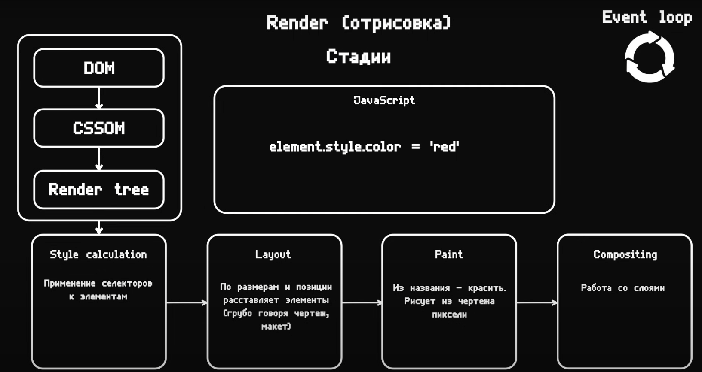
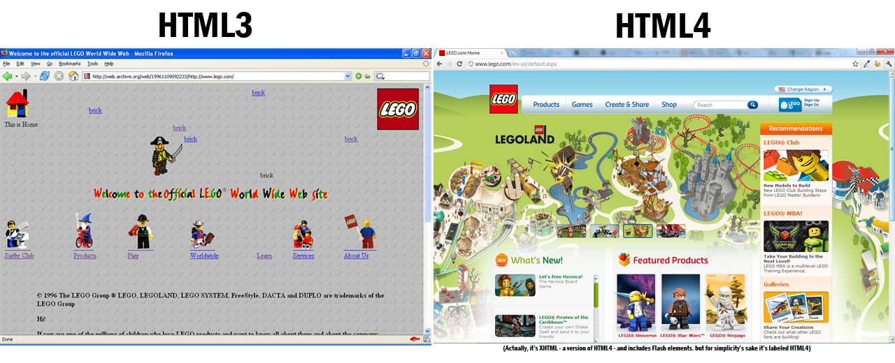

HTML это наследник SGML, вот только создавался он для того, чтобы им могли пользоваться и люди-неспециалисты в области верстки. Т.е. уже с первых дней у HTML были такие плюсы:
Британец Тимоти Джон Бернерс-Ли в Женевском ЦЕРНе изобрел язык гипертекстовой разметки, он же HyperText Markup Language, он же HTML, предназначенный для разметки и оформления документов World Wide Web.
И как вы уже, наверное, догадались, первый в мире веб-сайт создал тоже Тим Бернерс-Ли. И если точная дата изобретения HTML не известна (т.к. это был долгосрочный проект), то день рождения первого сайта очень даже - это было 6 августа 1991 года. Кстати, его можно увидеть и сегодня, правда уже в архиве.
HTML 1.0 был представлен в 1993 году и стал первым шагом к созданию стандартизированного языка разметки для веб-страниц. В этой версии были определены основные теги, такие как <p>, <a>, <img>, <h1> и другие, которые используются до сих пор.
Вышел 22 сентября 1995. Процесс разработки HTML 2.0 и утверждения новой версии был очень неспешным, а единственным заметным улучшением новой версии стали:
Март 1995 – начало работы над HTML 3.0 Первый вариант стандарта включал в себя много интересностей:
Версия 3.2 вышла спустя месяц после утверждения CSS, и была уже полностью приспособлена к взаимодействию с таблицами стилей. В ней были опущены многие нововведения версии 3.0, но добавлены нестандартные элементы, поддерживаемые браузерами Netscape Navigator и Internet Explorer 3.
CSS (Cascading Style Sheets) - это таблицы стилей, которые присоединяются к документу HTML и служат для визуального оформления тех или иных частей документа. С помощью CSS создатель веб-страницы наконец мог спокойно менять шрифт и размер чего угодно, и что важно – это стало возможным не за счет внедрения кучи новых тегов, а с помощью механизма, который влиял на интерпретацию уже существующих тегов HTML.
В этой версии изрядно подчистили элементы из предыдущих версий. Многие теги были отмечены как устаревшие и не рекомендованные к использованию. Вместо них нужно было использовать таблицы стилей CSS. Новая версия включала поддержку фреймов, скриптов, общую процедуру внедрения разных объектов. Также в ней были усовершенствованы таблицы и формы.
HTML5 предлагает программные интерфейсы (API) для обработки видео и аудио, реализации чатов, включая видеочаты через браузер, а также множество других увлекательных интерактивных возможностей. Даже браузерные игры разрабатываются с использованием HTML5.